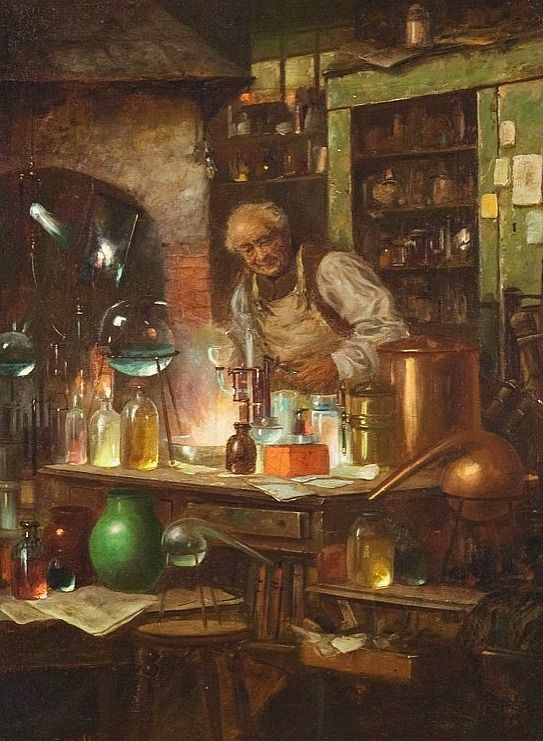

Chemistry - SNC2D Survival Guide

Hello again! This is still Stephen Chakras. This website contains absolutely all of the information I have ever written about the SNC2D Chemistry Unit. I hope it can be of use to you in some way!
Below, you will find a masterlist of different topics and lessons inside of this unit. Pick a lesson to learn more!
Below, you will find a masterlist of different topics and lessons inside of this unit. Pick a lesson to learn more!
If you haven't found what you're looking for or if you're pressed for time and need a quick summary of everything at once, check out the unit review below!
If you still haven't found what you're looking for or if you've found all you need, click here to return to the main site.